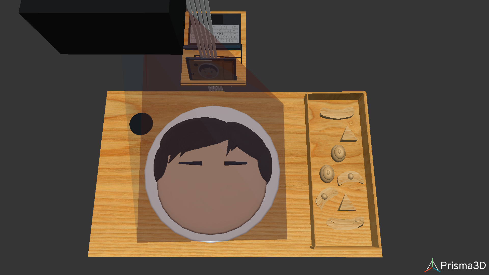
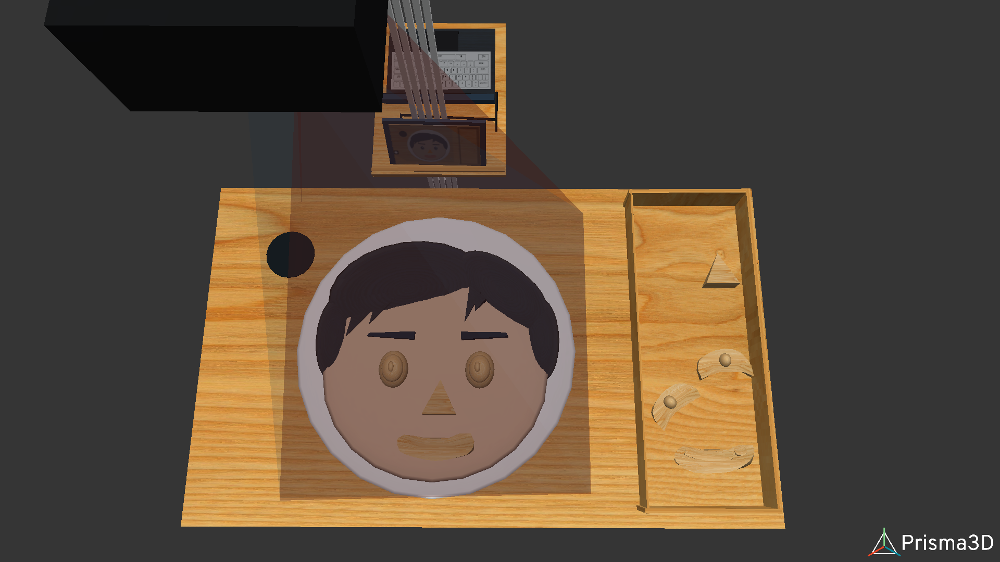
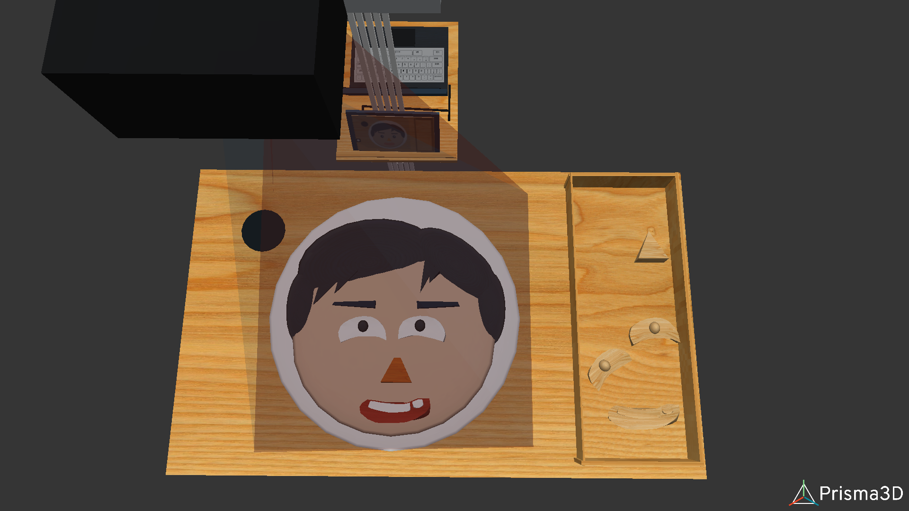
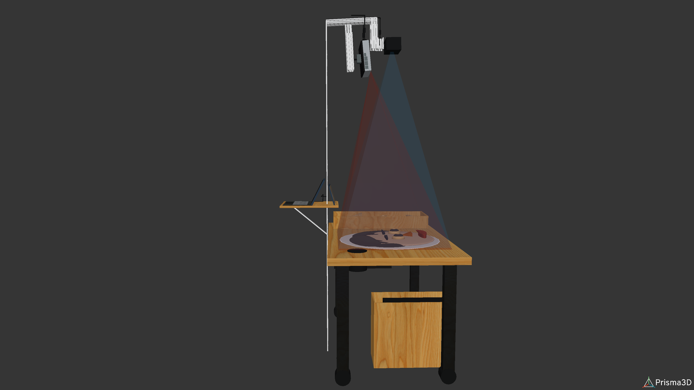

AI & Augmented Reality-Based Learning Concept for Children with Intellectual Disabilities
Samsung Solve For Tomorrow 2024 – Concept Proposal
Aku Gerak Ceria is an educational technology concept developed for Samsung Solve For Tomorrow 2024. The project aims to enhance self-awareness learning for children with intellectual disabilities (SLB C) through the integration of Artificial Intelligence (AI) and Augmented Reality (AR).
The system combines interactive wooden puzzle blocks, real-time AR projection, Kinect-based motion detection, and AI-powered feedback to create a multisensory learning experience that stimulates visual, auditory, and motor responses.
According to Special Olympics Indonesia (SOLNA), approximately 3% of Indonesia’s population (around 6.6 million people) experience intellectual disabilities. Learning for children with intellectual disabilities is most effective when it includes:
However, most educational technologies are not specifically adapted to their learning characteristics. Aku Gerak Ceria proposes a technology-assisted solution tailored to these needs.
The system functions as a modified AR sandbox concept with additional AI-driven personalization and audio interactivity.
Science: Motor-sensory stimulation principles, optical projection systems.
Technology: Augmented Reality, Machine Learning, Computer Vision, Kinect sensor.
Engineering: System integration of hardware (sensor, projector) and software development.
Mathematics: Linear algebra, geometry, statistics for pattern recognition and AI modeling.
As Team Leader of Trayutama, I initiated and structured the system concept and technical framework.



